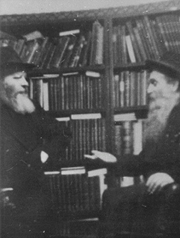

‘If Binyamin Takes Responsibility, Then I Agree’
The unusual quote in the title, is one that the Rebbe Rayatz said about the Chassid, R’ Binyamin Gorodetzky, when he suggested moving the main Yeshivas Tomchei T’mimim to Nevel after it was closed down by the authorities. He was only 18 years old. * About the devoted Chassidic askan, the man who served as the Rebbeim’s representative in Europe, Eretz Yisroel, and Africa. * To mark his passing on 5 Av 5755.
ASKAN FROM A YOUNG AGE

After about two years, the boy heard that Yeshivas Tomchei T’mimim had opened in Poltava and he told his father he wanted to learn there. Despite his being the family’s breadwinner, his father agreed and the young man left home for the yeshiva in Poltava. After someone tattled about the yeshiva in Poltava, he went to the yeshiva in Nevel, and after the police closed it down, he went to Charkov as the Rebbe Rayatz said to do.
For Rosh Hashanah 5684/1923, R’ Yechezkel Feigin, the menahel of the yeshiva, went to the Rebbe in Rostov. Some bachurim, who had permission, joined him. R’ Binyamin was not one of those fortunate few. As he sat in the yeshiva that was next to the local shul, R’ Shmuel Bespalov saw him. When he heard the reason for his remaining behind, he took money out of his pocket for traveling expenses. That is how R’ Binyamin was able to go to the Rebbe for Sukkos.
That Tishrei, the Rebbe decided he wanted to bring the yeshiva back to Rostov, so R’ Binyamin remained in Rostov. But after a few months, there began persistent rumors that they wanted to arrest the Rebbe, so the Rebbe left the city until Pesach. At that time, the Rebbe said he did not want to leave his house without Torah and therefore, he left two bachurim there, Binyamin Gorodetzky and Yosef Patchin.
On the day the Rebbe returned to the city, NKVD agents visited the yeshiva. It was clear that the yeshiva had to leave the city immediately and they began looking for a solution. Binyamin, who was 18, spoke to the Rebbe’s secretary, R’ Elchonon Morosov and suggested Nevel, a town he knew well. R’ Chonye conveyed the suggestion to the Rebbe who said that if Binyamin took responsibility, he agreed.
When R’ Binyamin arrived in Nevel, he opened the yeshiva and took care of all its material needs. He simultaneously began shiurim in Ein Yaakov and Mishnayos in all the shuls of the town. When the yeshiva grew, the Rebbe said to open a “Beis Midrash for Rabbanim,” and he told R’ Binyamin and the young men his age to learn there. When R’ Binyamin said he wanted to learn in Tomchei T’mimim, the Rebbe said, “This is also Tomchei T’mimim. I wrote to R’ Yechezkel Feigin that he should send older bachurim to Nevel to the Beis Midrash L’Rabbanim. What is the problem? You want easier work? You need to toil!”
GROOM IN PRISON
The young askan became engaged in the winter of 5686 to the daughter of the head of the beis midrash, R’ Shmuel Levitin. When R’ Shmuel told the Rebbe about the wedding date, Purim Katan 5687/1927, the Rebbe asked, “Will the chassan be able to attend the wedding?”
That summer, the Rebbe told R’ Binyamin to travel to Kiev and to serve as a rav as well as to start a school. When he arrived in Kiev and went to visit the local school, his heart sank. The Zionists had taken over and in some of the classes they learned Tanach without wearing head coverings. Since the local askanim were not exactly receptive to Lubavitch taking over the school, it was necessary to open a new school. R’ Binyamin got to work. He informed the sextons of the various shuls that for every child they brought to his school, they would receive fifty kopeks. Within a week, 150 students had signed up. R’ Binyamin hired expert teachers for them and when he began receiving money from the Rebbe, he also provided for their physical sustenance.
The young rabbi began giving shiurim in Chassidus in shuls. In places where the simple people davened, he told them Chassidishe stories and about the Rebbe. Erev Rosh Hashanah, the gabbai of the Lubavitch shul, R’ Shmuel Zalman Korbalnik returned from a trip and met the budding young rav, and by the next day, he was already invited to speak from the bima. On 10 Kislev, a big celebration was held in the shul which was attended by famous Admurim.
The night of 7 Adar, one week before his wedding, R’ Binyamin was visited by NKVD agents. They began searching his house and after finding a box of receipts for the school, they decided to arrest him. It was extraordinary hashgacha pratis, since the house also had correspondence containing secret information about the network of schools. If they would have continued to search, there is no doubt they would have found it.
After two months of suffering, as he agonized how he would survive Pesach behind bars, R’ Binyamin was released on the night of B’dikas Chametz. His release was the result of the efforts of a Jewish NKVD agent by the name of Taver, whose father had already renounced his religion in favor of the prevalent one, and ran a factory that sold candles to their houses of worship. The NKVD appointed the son as the head of the Jewish community in Kiev. When he heard that the rav of the Chabad Chassidim had been arrested and did not know how he would survive Pesach, he quickly used his connections to get him released.
R’ Binyamin quickly returned to Charkov and that night they celebrated his release at the 13 Nissan farbrengen. The next day, he began to concern himself that the talmidim go back to school and the teachers return to teach.
His belated oifruf took place on Shavuos, in the Rebbe’s shul in Leningrad, and the wedding took place a few days later. “You can be a rav because it is not illegal, and all the rest must be done secretly and wisely,” said the Rebbe to the chassan. A few months later, on Sukkos, a few days before the Rebbe left Russia, the Rebbe told him to continue in rabbanus and in communal work.
ONE ARREST AFTER ANOTHER
In the summer of 5688/1928, the government shut down one of the two mikvaos in Kiev, supposedly for renovations. It was never reopened, and they had their eyes on the second one too. Taver, who heard about this, suggested to R’ Binyamin that he ask to renovate it himself and he would take care of the permits. This is what happened, but two years later, no intervening helped and the mikva was closed. The Jews of Kiev were forced to dig mikvaos in secret places. The first one to volunteer his home was someone by the name of Yaakov Meizlik, who lived in the center of the city. The noise and commotion in the area were conducive to carrying out secret construction work.
Between the closing of the mikva and the construction of the secret mikva, R’ Binyamin was arrested again. It was when he was traveling to Horonsteipel, which did not have a mikva, and he spoke on Shabbos to the community about the necessity of building a mikva. By Motzaei Shabbos a mikva building committee had already been formed and donations were collected. The next day he was arrested and was only released when he signed a form saying he would never visit the area again.
In the early 1930’s he went to Moscow. On the way back to Kiev, in order to bring his family, he spent Shabbos in Homil. On Motzaei Shabbos, there was a Chassidishe farbrengen in the home of R’ Avrohom Katzenelenbogen. In the middle of the night, the “postman” knocked and said he had an urgent telegram for Binyamin Gorodetzky. The Chassidim said he wasn’t there.
The next day when he boarded the train he discovered, to his terror, two NKVD men in his compartment. He managed to throw out of his pocket a paper containing various calculations regarding the running of the schools. A few minutes later, the NKVD men stopped the train, a black car arrived, and R’ Binyamin was taken to the local jail. At first, his family did not know of his arrest or where he was. After four months he was sent to exile in Kotlas, in the north of the country, for three years.
MESIRUS NEFESH FOR SHEMIRAS SHABBOS
On the day he was transferred to Kotlas, they forced all the prisoners to walk three kilometers in the pouring rain, escorted by armed soldiers and dogs. They reached the train station where they put twenty men in each compartment meant for six to eight people. They were soaked to the bone and crowded together. That is how they spent the trip until they arrived in Kotlas, where a ship took them to a labor camp.
The prisoners were supposed to chop trees and work at other difficult jobs. Hashgacha worked it out so that the commander of the camp was a Jew named Berman who saw R’ Binyamin’s suffering. He decided to transfer all the religious functionaries to Kotlas where they could live like anybody else in the city but would not be allowed to leave. R’ Binyamin, who was the only rabbi in the area, joined the priests and they went to the port city where they waited for a ship to take them back to the main camp. They arrived in the city on a Wednesday, but the ship arrived only on Shabbos. The priests boarded, but R’ Binyamin, who refused to board despite the danger to his life, found himself alone in the city.
Another ship arrived on Motzaei Shabbos. Among those who debarked was a drunk NKVD man who began to suspect R’ Binyamin. Unfortunately, although an official document had been sent with them about the transfer, the priests had taken it with them when they boarded the ship. Miraculously, the drunk fell asleep and R’ Binyamin slipped away to the camp in order to obtain another letter with which he boarded the ship on Sunday.
R’ Binyamin reached Kotlas and even met two Chassidim who had been exiled there with their wives. After a day in the city, he was stricken with typhus. After weeks of suffering, with enormous help from the Chassidim, he regained his health. Since these men had, in the meantime, completed their sentence, he took their place at the home they had been living in.
AS YAAKOV AVINU DID
One night, his landlord became drunk and tried to kill him. R’ Binyamin escaped from the house and found another place to live. He rented a place to sleep, which was a narrow space between the oven and the ceiling.
These horrible conditions broke his spirit and he deliberated about whether he should try to run away. There was only one way out, by train, and it was well guarded by NKVD men. Furthermore, the man who was supposed to examine the passengers before the train left the station, lived in the same house as R’ Binyamin for a while and knew him well, so forged papers would not help him. R’ Binyamin asked the Rebbe who responded to do “as per the advice of our old father Yaakov” (apparently an allusion to his fleeing the house of Lavan – Ed.).
At this time, his mother-in-law came to visit him. R’ Binyamin took his t’fillin and went to escort her to the train station. She had two tickets in her pocket. It was an auspicious day, Yud-Tes Kislev.
The way it worked at the train station was, a minute before the train left, it sounded a whistle. A minute later there was a second whistle and then it departed. R’ Binyamin boarded the train with his mother-in-law, as though to talk to her. The NKVD agent immediately followed him, but when he saw R’ Binyamin come out at the first whistle, he relaxed and went to the next compartment to take another look. R’ Binyamin immediately jumped back onto the train, found himself a place to lie down, and went to sleep.
When he woke at five in the morning, the people in the compartment told him that he was a lucky man. NKVD agents, who had passed through, had arrested most of the people in the compartment for trying to escape. They had shone flashlights in his face and when he did not wake up, they left him alone, knowing that an escapee would not be able to sleep peacefully. The NKVD did not know that a Jew of faith is not like other criminals and that his faith in the bracha of a tzaddik is what saved him and enabled him to sleep soundly.
After he escaped, the Rebbe instructed him to move to Kursk. He lived there for five years with forged papers and worked as a night watchman so he wouldn’t have to walk around the city during the daytime. Despite his meager salary, he managed to organize a Yeshivas Tomchei T’mimim in which fifteen bachurim learned.
After five quiet years, he saw that the NKVD was after him and he escaped for Voronezh. There he worked in a beverage concern. When the war began, he asked the Rebbe how to proceed. When the Rebbe received R’ Binyamin’s letter he instructed that a letter should be sent to him immediately, telling him to leave the store and move to a different apartment. R’ Binyamin miraculously managed to evade arrest. He found a place to live in the center of the city. During the war years, he saw the extent of the Rebbe’s foresight, as his new home in the center of the city became a way station for many refugees. R’ Binyamin and his wife were on the last train that left Voronezh for Tashkent, where they lived out the war.
After the war, he left Russia with forged documents and after much exhausting travel, he arrived in Paris on 17 Tammuz 1946.
HE REMAINED THE SAME BINYAMIN
Not long after he arrived in Paris, R’ Binyamin received a letter from the Rebbe in which he appointed him as the director of the Lubavitch European Office (henceforth known as the Lishka). Its role was to help refugees from Russia who were still in DP camps in Europe. R’ Binyamin, who had already met with the Joint, went to Poking and met with Anash who told him their needs. From there, he went to London and from there, he flew to New York.
R’ Binyamin spent several hours in yechidus, after twenty years of not seeing the Rebbe. He gave regards from Anash in Russia and Poking.
The Rebbe told him, “You should know that you are my man. You are not to engage in dealings with anyone else. Inform my sons-in-law that you are my man. Inform your father-in-law (R’ Shmuel Levitin) that you are mine. Tell yourself that you are my man, and also tell the public that you are my man!”
A few hours after the yechidus, the Rebbe’s daughter and her husband (later to be the Rebbe) looked for him and asked him about the yechidus. They said that after he left the Rebbe’s room, the Rebbe cried, but they were tears of joy. “He is the same Binyamin that I knew; just his beard grew, but he remains the same Binyamin – after twenty years!”
After a few days in 770 the Rebbe told him to go with Rashag to Germany. When he said that his family was on the way to New York and had not arrived yet, the Rebbe said they would arrive and it was not necessary for him to wait for them. The family met for Shabbos in the port city of Cherbourg, and on Motzaei Shabbos R’ Binyamin escorted his family to the ship while he continued his journey with Rashag to Germany.
From there R’ Binyamin continued to Paris as the Rebbe’s representative to establish the European office. His first and main task was to obtain visas to France for Anash who were in DP camps in Austria. Aside from this, he immediately started a school in the famous shul in the Pletzel. The chief rabbi of Israel, R’ Herzog, arrived in Paris and R’ Binyamin met with him in order to develop a plan to help the refugees. His job was also to report to the Rebbe about the condition of Anash. He saw how the Rebbe cared for every Chassid like a father cares for his only child.
In the post-war years, a time when there were food shortages, R’ Binyamin set up a matza bakery for Pesach. It wasn’t at all easy to obtain the huge amounts of flour they needed, but Hashem helped and the bakery supplied matza for Anash.
The most difficult thing in those days for the refugees was finding a habitable place to live. The job of placing them fell on the Lishka. It was a tremendous amount of work until R’ Binyamin managed to house the refugees in suitable quarters.
The next problem was finding work for them. R’ Binyamin, and his secretary, R’ Refael Wilschansky, worked devotedly in matching each person with suitable work. For several months, the Lishka operated as a housing authority, an employment agency, a welfare office, and a ministry of religion, all at the same time, with requests coming in from all over Europe for t’fillin, a Siddur, or material about Judaism. The Lishka disseminated Jewish material in French, which reached nearly every country in the world where this language is spoken.
When the government of Ireland donated meat to Eretz Yisroel, the Joint asked R’ Binyamin to arrange the kashrus. A group of ten Chassidim went to Ireland under the auspices of the Lishka. The Lishka also started a school for girls and a teachers’ seminary and began sending Chassidim to DP camps in order to provide chinuch to the children. The Lishka also sent packages of clothing to Jews in the Soviet Union.
THE GROUNDWORK FOR THE SHLICHUS REVOLUTION
In the winter of 5709, someone met R’ Binyamin and told him that he had gone to Morocco to disseminate Judaism, but he had returned because the climate was not good for his health. He said that there were many Jews there who were interested in Judaism and he suggested bringing Jewish children from there to France and having the Lishka see to their chinuch.
This did not end up working out but R’ Binyamin told the Rebbe about it when he went for Tishrei 5710. On Chanukah the Rebbe told him that work should begin immediately in Morocco, and he should speak to his son-in-law (soon to be the Rebbe), since this pertained to Merkos. When R’ Binyamin spoke to the Rebbe’s son-in-law, the latter asked him whether he had someone he recommended. R’ Binyamin said he recommended R’ Michoel Lipsker. When R’ Michoel was asked, he agreed to the assignment.
R’ Michoel was sent to Meknes (by the new but not yet official Rebbe, only days after the passing of the Rebbe Rayatz on Yud Shevat) and he started a yeshiva, with R’ Binyamin traveling to Morocco to take care of technical matters. Near Meknes is Midelt where the rabbi was Rabbi Meir Abuchatzeira, the son of Baba Sali. R’ Binyamin went there and started a school. Then, a school was started in Casablanca that was run by R’ Shlomo Matusof. More manpower was needed. More people went to Morocco: R’ Nissan Pinson (who later went to Tunisia and started Chabad mosdos there), R’ Sholom Eidelman, R’ Saadia Lieberov, R’ Zalman Teibel, R’ Mordechai Belinov, and R’ Yehuda Leib Raskin. They were followed by R’ Ezriel Chaikin.
One day, the police showed up at R’ Ezriel Chaiken’s home in Agadir and arrested him. They put him on a plane to Paris and did not even allow him to take leave of his family. It turned out that they suspected him of gathering Jews in order to convince them to make aliya, a serious crime in Morocco in those days.
R’ Binyamin, who saw that special efforts were needed in order to enable him to return, wrote to the Rebbe that it seemed preferable to send someone else, rather than make a big deal out of it. The Rebbe agreed. R’ Ezriel went to run the yeshiva in Copenhagen, a yeshiva founded because of requests from the leaders of the community to the Lishka. Two months after he left Agadir, there was a devastating earthquake which killed thousands. Ten talmidim from the yeshiva were among the dead, and the building that R’ Ezriel had lived in collapsed on its inhabitants.
One of the most important activities that R’ Binyamin was involved in, upon a personal, explicit instruction from the Rebbe, was the release of Jewish prisoners in Romania. The costs of smuggling them out was $2000 for every family and R’ Binyamin was able to get funding from the Joint to free thousands of Jews from Romania. The Rebbe had turned to R’ Binyamin when the Skulener Rebbe asked the Rebbe to use Chabad connections with the Joint to fund the project.
It should be mentioned that R’ Binyamin also served as the Rebbe’s representative in Eretz Yisroel. He went twice a year and was involved in the founding of many Chabad mosdos. In some cases, he was the main impetus behind the project such as with the Vocational School in Kfar Chabad and the Nachalat Har Chabad neighborhood.
R’ Binyamin passed away on 5 Av 5755.
D. Levanon. "‘If Binyamin Takes Responsibility, Then I Agree’." Beis Moshiach, no. 887 (July 11, 2013).